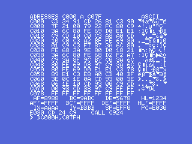
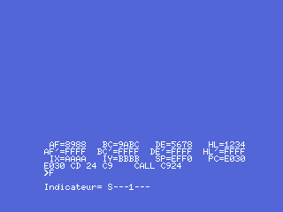

El debugger, devuelto a la vida
Demonia lleva dentro un monitor de código máquina entero — un debugger, que Claude Sablatou escribió para Loriciels en 1984 y que viaja en el juego de 1986 porque el mismo hombre firmó los dos. La página de Hallazgos cuenta cómo se encontró y por qué, en esta cinta, ya no responde: el juego grabó sus 24 fichas de pantalla justo encima de su sección de datos (0xD000-0xD8FF), borrándole la tabla de órdenes, las tablas del desensamblador y una docena de subrutinas de pantalla y teclado.
Esta página va de ponerlo otra vez en pie — y funciona.
Que quede claro desde el principio: esto no es el debugger original recuperado entero. No tenemos el 100% del código de Sablatou. Cerca del 40% del monitor — los datos y rutinas que el juego borró — ya no existe en ninguna parte y hubo que rehacerlo. Lo que corre es más o menos un 60% de su código original superviviente y un 40% reconstruido para encajar: un equivalente que funciona, no el original perdido.

Qué sobrevivió y qué no
El sesenta por ciento del monitor está intacto: su intérprete de órdenes, su paso a paso, su volcado de registros, el código del desensamblador y todos sus textos siguen vivos de 0xC24D a 0xCFFF y de 0xD900 a 0xDAC7. Lo que el juego destrozó fueron sus datos, en 0xD000-0xD8FF:
| pieza perdida | qué era |
|---|---|
tabla de órdenes (0xD5C6) | 15 entradas de inicial + puntero al manejador |
tablas del desensamblador (0xD64A, 0xD67C, 0xD826, 0xD88B, 0xD5F3…) | ~2 KB: nemónicos, mapas de opcode, punteros de formato |
subrutinas de pantalla/teclado (0xD200-0xD2E8) | limpiar, salto de línea, esperar tecla… |
Esto es una reconstrucción, no una recuperación. Los bytes originales de Sablatou para esas tablas y rutinas se perdieron para siempre. Lo que sigue es un equivalente funcional: código y datos nuevos que cumplen los mismos contratos que espera el código superviviente, para que su código vuelva a correr y el monitor se comporte como lo hacía.
Devolver el monitor interactivo
La zona muerta se llevó una docena de las subrutinas de pantalla y teclado del propio monitor (0xD200-0xD2E8). Cada una se rehace en su dirección exacta desde el contrato que exigen sus llamadores supervivientes: 0x0072/INITXT para su pantalla de texto de 40 columnas (demostrado por su propia geometría de casilla, fila*40 + columna + 2), una lectura de tecla no bloqueante sobre CHSNS/CHGET, la pareja que cambia el mapa de ranuras entre la memoria del monitor y la del programa detenido, el pitido ante una orden mala y el gancho de error de BASIC. Con eso puesto, el monitor arranca, monta su pantalla y pinta los doce registros del programa detenido — la imagen de arriba, donde HL=1234, DE=5678, IX=AAAA son los valores que un pequeño lanzador puso ahí a propósito.
La tabla de órdenes se rehace entrada a entrada, devolviéndole a cada manejador superviviente su letra, y todas las órdenes responden — tecleadas de verdad en el monitor y leídas de vuelta en la pantalla de un Philips VG-8020:
| tecla | orden | qué hace |
|---|---|---|
L | listar | desensambla un rango de memoria |
D | volcar | muestra la memoria en hex y ASCII, y la edita bajo un cursor |
S | buscar | rastrea un byte desde una dirección y se planta en él |
R | registros | pinta los doce del programa detenido |
F | banderas | deletrea SZ1H1PNC para él |
I | interrupciones | permitidas o prohibidas a la vuelta |
B | breakpoints | lista las diez casillas |
T | paso a paso | ejecuta el programa detenido instrucción a instrucción |
= | evaluar | lee un número en cualquier base y lo imprime |
G | go | restaura los registros y salta |
D es el banco de trabajo del debugger: una pantalla de memoria en hex y ASCII, un cursor que se mueve con las flechas, y dígitos hexadecimales que reescriben el byte que hay debajo —

F lee el byte de banderas directamente del programa detenido — aquí S---1---, la bandera de signo y el bit siempre a uno de un AF cuyo byte bajo es 0x88:

G — Go, y el fósil. El manejador de 0xC5D3 lee una dirección en hexadecimal, la guarda y salta ahí. El fósil dejó lo último que el autor tecleó, G7FE0, congelado en el tampón de entrada. Teclear esa misma orden en el monitor resucitado salta a la rutina de sonido de 0x7FE0 — su sesión de depuración de 1986, repetida a mano:

T — paso a paso es el single-step. Desensambla la instrucción siguiente, la copia a un tampón, la ejecuta con los propios registros del programa y recupera el mando para redibujarlos avanzados en uno. Es la orden que necesita que el desensamblador marque cada instrucción por tipo — un salto, una llamada, un retorno — para que el paso sepa cómo continuar, y lo hace: trazar un bucle corto hace avanzar el contador de programa y los registros instrucción a instrucción.
Una cosa que el monitor ya no puede hacer entera: la calculadora = lee y convierte un valor en cualquier base, pero su tabla de operadores vivía en 0xD8FB, dentro de la zona muerta, así que la aritmética encadenada (+, -, *, /) se fue con ella — otra pequeña baja de la sobrescritura, dicha claro.
El desensamblador
El desensamblador fue lo difícil. Sus tablas fueron lo más a fondo borrado, y las rutinas que formateaban sus operandos vivían también en la zona muerta. Así que el desensamblador es el equivalente más completo: un desensamblador Z80 compacto que cumple el contrato del monitor — dada una dirección en IX, escribe el texto del nemónico y la longitud de la instrucción exactamente donde el código de pantalla superviviente (0xC568) los espera. Solo hubo que repuntar esa única llamada.
Cubre todo el juego de instrucciones del Z80 — sin prefijo, CB, ED, DD/FD (IX/IY) y DDCB/FDCB — y se comprobó instrucción a instrucción en el emulador, grupo por grupo: los destinos de los saltos relativos, los desplazamientos (IX+d) y (IY-d), las operaciones de bit DD CB y todas las longitudes. El volcado de registros ya lo demuestra en pantalla — la línea bajo los registros desensambla la instrucción del contador de programa:

Y con la orden L (listar) cableada a su manejador superviviente en 0xC535, el monitor desensambla cualquier rango. La prueba más fina que hay: el monitor desensamblando su propio código máquina, su rutina de entrada, en vivo en pantalla — LD (C1F6),SP, IM 1, la ristra de PUSH que guarda los registros, LD SP,(C1F6):

Cómo se lee, y cómo se hizo
Los números usan la convención Intel/Loriciels que espera el parser: una dirección en hexadecimal lleva una H detrás (L7FE0H,7FE6H). La reconstrucción vive en el repositorio bajo debugger/: el generador del desensamblador (gen_disasm.py), las helpers y la tabla de órdenes rehechas, y los guiones de openMSX que arrancan el monitor y capturaron cada pantallazo de esta página en un MSX1 real (un Philips VG-8020). Aquí no hay ningún montaje; cada imagen es un fotograma en crudo del emulador corriendo el monitor reconstruido.
Cuidado con la afirmación: lo medido es que el monitor reconstruido arranca, acepta todas las órdenes y desensambla bien, mostrado por las capturas y una comprobación instrucción a instrucción del desensamblador. Lo que es reconstrucción — dicho claro — son las letras de la tabla de órdenes, las rutinas helper rehechas y el propio desensamblador; son equivalentes, no los originales perdidos de Sablatou, y una tabla perdida (los operadores del =) no vuelve.